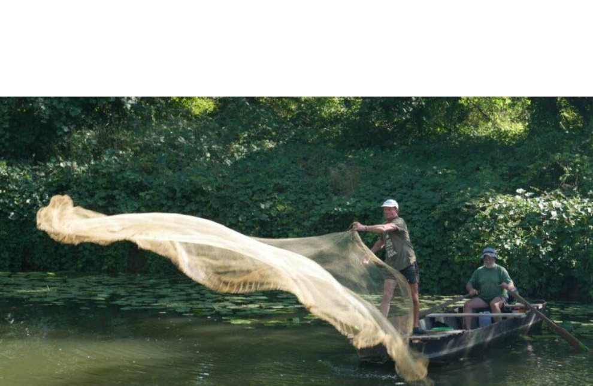

Listen to 'Heaviness' in English

IX LOURDE
Ni le roulis. Le cri s'agence. S'achève
Le poids lointain de rêves et d'os. Relève
D'un nouveau poids. Soleil ni vent. Astre clos.
(Suprême amour, as-tu connu ton repos?)
Sur l'épervier s'est refermé le scandale.
Ni le roulis, ni le dépit.
Plomb et dalle.
16 août 1991
Copyright Michel Galiana 01.04.2006 (c) (r) All rights reserved
Transl. Christian Souchon 01.04.2006 (c) (r) All rights reservedIX HEAVINESS No rolling stream. The cry comes forth. Abolished The distant weight of dreams and bones. Replenished By a new weight. No sun, no wind, but star-close (Supreme love, did you ever enjoy repose?) The cast net was caught by the outrageous crab. No rolling stream, no frustration: Leaden slab. August 16th 1991
Note :
|
Michel n'en dit pas assez, pour qu'on comprenne d'emblée à quel scandale ce poème fait allusion. L'"épervier" du 5ème vers est sans doute un filet de pêche. Pourquoi est-ce le scandale qui se referme sur l'épervier et non l'inverse? Pourquoi ce titre "Lourde" au féminin? (Ou faut-il lire "lourdé", un mot d'argot pour dire "Mis à la porte!" Peut-être faut-il rapprocher ce texte d'un autre poème de 1991: Les funérailles de l'amour. |
Michel does not say enough for us to immediately understand what scandal this poem is referring to. The "hawk" (épervier) of the 5th verse is undoubtedly a fishing net. Why is it scandal that closes on the hawk and not the other way around? Why the title "Heavy" in the feminine? (Or is it a piece of slang meaning "dismissed"? Perhaps we should compare this text to another poem from 1991: The funeral of love. |
Listen to 'Heaviness' in English